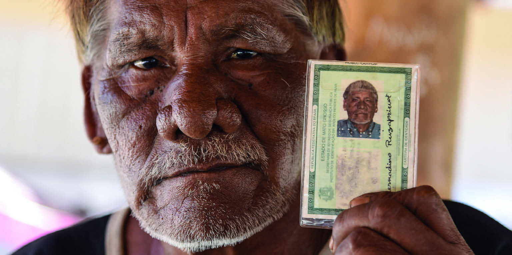

CAPÍTULO 2
NÚMEROS E NOMES QUE NOS IDENTIFICAM
Cesar Diniz/Pulsar Imagens

CACIQUE BERNARDINO, DA ETNIA XAVANTE, DA ALDEIA DO BAIXÃO, TERRA INDÍGENA PARABUBURE, MATO GROSSO, FOTOGRAFIA DE 2022, EXIBE SEU DOCUMENTO DE IDENTIDADE.
O ACESSO AOS DOCUMENTOS PESSOAIS É UM DIREITO DE TODO SER HUMANO.
QUAL É A IMPORTÂNCIA DOS DOCUMENTOS PESSOAIS?
ABORDAREMOS A IMPORTÂNCIA DAS VIVÊNCIAS E DAS MEMÓRIAS, BEM COMO A LEITURA DE INFORMAÇÕES EM DOCUMENTOS PESSOAIS, RESSALTANDO A IDENTIFICAÇÃO DAS CARACTERÍSTICAS DOS GÊNEROS RELATO DE MEMÓRIAS E LISTA.
ALÉM DISSO, EXPLORAREMOS ALGUNS NÚMEROS PRESENTES EM NOSSO COTIDIANO, A ORGANIZAÇÃO DE DADOS EM TABELAS E GRÁFICOS E A RELAÇÃO ENTRE OS DIAS DA SEMANA NO CALENDÁRIO.
POR MEIO DAS ATIVIDADES PROPOSTAS, VOCÊ VAI DESENVOLVER SUA CAPACIDADE LEITORA PARA INTERPRETAR E UTILIZAR DE MANEIRA EFICIENTE AS INFORMAÇÕES PRESENTES EM DOCUMENTOS PESSOAIS, DESENVOLVENDO HABILIDADES DE ANÁLISE TEXTUAL E MATEMÁTICAS.